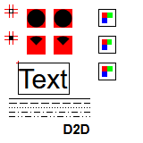
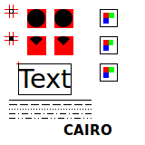

A group of functions to draw in a IupCanvas or a IupBackgroundBox. They are simple functions designed to help the drawing of custom controls based on these two controls. It is NOT a complete set of drawing functions, for that you should still use another toolkit like CD.
To use the functions in C/C++ you must include the "iupdraw.h" header.
Internally IupDraw uses several drawing APIs: GDI, Direct2D, GDI+ (in Windows); X11 (in Motif), GDK and Cairo (in GTK).
All drivers are double buffered, so drawing occurs off-screen and the final result is displayed when IupDrawEnd is called only.
Direct2D and GDI+ are accessed using the WinDrawLib library by Martin Mitáš. This library is embedded in IUP source code and uses dynamically load to import Direct 2D and GDI+ functions in C, so no extra libraries are need to be linked by the application. It uses the same MIT license used by IUP. We would like to thank Martin Mitáš for sharing such important tool. (since 3.25)
Since IUP 3.25, the Direct2D/GDI+ Windows, and Cairo in Linux (even in GTK 2) drivers added support for alpha (transparency) in colors and antialiasing in primitives. In Windows XP, there is no Direct 2D then GDI+ is used. In IUP 3.25 we set the Direct 2D driver as default, but the overall performance of complex dialogs became noticeably slow unfortunately, so in 3.27 we were force to go back to GDI. But we added a hack to use GDI+ for diagonal lines (non vertical or horizontal), polygons and arcs were antialiasing is more needed and does not affect less ordinary rectangular based drawings . The hack is enabled by default using the canvas DRAWANTIALIAS attribute in Windows when using GDI, set it to NO if you need to disable the hack. The Direct2D driver can be enabled by setting the canvas DRAWUSEDIRECT2D attribute to Yes. If you want to enable it for all controls at once set DRAWUSEDIRECT2D=Yes as a global attribute.
The canvas has a new attribute called DRAWDRIVER that returns: GDI, D2D, GDI+, X11, GDK or CAIRO.
IMPORTANT: all functions can be used only in IupCanvas or IupBackgroundBox and inside the ACTION callback. To force a redraw anytime use the functions IupUpdate or IupRedraw.
All other functions can be called only between calls to DrawBegin and DrawEnd.
void IupDrawBegin(Ihandle* ih); [in C] iup.DrawBegin(ih: ihandle) [in Lua] ih:DrawBegin() [in Lua]
Initialize the drawing process.
void IupDrawEnd(Ihandle* ih); [in C] iup.DrawEnd(ih: ihandle) [in Lua] ih:DrawEnd() [in Lua]
Terminates the drawing process and actually draw on screen.
void IupDrawSetClipRect(Ihandle* ih, int x1, int y1, int x2, int y2); [in C] iup.DrawSetClipRect(ih: ihandle, x1, y1, x2, y2: number) [in Lua] ih:DrawSetClipRect(x1, y1, x2, y2: number) [in Lua]
Defines a rectangular clipping region.
void IupDrawResetClip(Ihandle* ih); [in C] iup.DrawResetClip(ih: ihandle) [in Lua] ih:DrawResetClip() [in Lua]
Reset the clipping area to none.
void IupDrawGetClipRect(Ihandle* ih, int *x1, int *y1, int *x2, int *y2); [in C] iup.DrawGetClipRect(ih: ihandle) -> x1, y1, x2, y2: number [in Lua] ih:DrawGetClipRect() -> x1, y1, x2, y2: number [in Lua]
Returns the previous rectangular clipping region set by IupDrawSetClipRect, if clipping was reset returns 0 in all values. (since 3.25)
The primitives color is controlled by the attribute DRAWCOLOR. Default: "0 0 0". Since version 3.25 the alpha component is also supported but depends on the current driver, if not specified 255 (opaque) is assumed.
Rectangle, Arc and Polygon can be filled or stroked. When stroked the line style can be continuous, dashed or dotted. These are controlled by the attribute DRAWSTYLE. Can have values: FILL, STROKE, STROKE_DASH, STROKE_DOT, STROKE_DASH_DOT or STROKE_DASH_DOT_DOT (dash dot and dash dot dot since 3.25). Default: STROKE. The FILL value when set before DrawLine has the same effect as STROKE.
The line width default is 1, but it can be controlled by the DRAWLINEWIDTH attribute. (since 3.24)
void IupDrawParentBackground(Ihandle* ih); [in C] iup.DrawParentBackground(ih: ihandle) [in Lua] ih:DrawParentBackground() [in Lua]
Fills the canvas with the native parent background color.
void IupDrawLine(Ihandle* ih, int x1, int y1, int x2, int y2); [in C] iup.DrawLine(ih: ihandle, x1, y1, x2, y2: number) [in Lua] ih:DrawLine(x1, y1, x2, y2: number) [in Lua]
Draws a line including start and end points.
void IupDrawRectangle(Ihandle* ih, int x1, int y1, int x2, int y2); [in C] iup.DrawRectangle(ih: ihandle, x1, y1, x2, y2: number) [in Lua] ih:DrawRectangle(x1, y1, x2, y2: number) [in Lua]
Draws a rectangle including start and end points.
void IupDrawArc(Ihandle* ih, int x1, int y1, int x2, int y2, double a1, double a2); [in C] iup.DrawArc(ih: ihandle, x1, y1, x2, y2, a1, a2: number) [in Lua] ih:DrawArc(x1, y1, x2, y2: number) [in Lua]
Draws an arc inside a rectangle between the two angles in degrees. When filled will draw a pie shape with the vertex at the center of the rectangle. Angles are counter-clock wise relative to the 3 o'clock position.
void IupDrawPolygon(Ihandle* ih, int* points, int count); [in C] iup.DrawPolygon(ih: ihandle, points: table of number) [in Lua] ih:DrawPolygon(points: table of number) [in Lua]
Draws a polygon. Coordinates are stored in the array in the sequence: x1, y1, x2, y2, ...
void IupDrawText(Ihandle* ih, const char* str, int len, int x, int y, int w, int h); [in C] iup.DrawText(ih: ihandle, str: string, x, y[, w, h]: number) [in Lua] ih:DrawText(str: string, x, y[, w, h]: number) [in Lua]
Draws a text in the given position using the font defined by DRAWFONT (since 3.22), if not defined then use FONT. The size of the string is used only in C. Can be -1 so strlen is used internally. The coordinates are relative the top-left corner of the text. Strings with multiple line are accepted using '\n" as line separator. Horizontal text alignment for multiple lines can be controlled using DRAWTEXTALIGNMENT attribute: ALEFT (default), ARIGHT and ACENTER options (since 3.22). For single line texts if the text is larger than its box and DRAWTEXTWRAP=Yes, then the line will be automatically broken in multiple lines. Notice that this is done internally by the system, the element natural size will still use only a single line. For the remaining lines to be visible the element should use EXPAND=VERTICAL or set a SIZE/RASTERSIZE with enough height for the wrapped lines. (since 3.25) If the text is larger that its box and DRAWTEXTELLIPSIS=Yes, an ellipsis ("...") will be placed near the last visible part of the text and replace the invisible part. It will be ignored when WRAP=Yes (since 3.25). w and h are optional and can be -1 or 0, the text size will be used, so WRAP nor ELLIPSIS will not produce any changes. The text is not automatically clipped to the rectangle, if DRAWTEXTCLIP=Yes it will be clipped but depending on the driver may affect the clipping set by IupDrawSetClipRect (since 3.25). The text can be draw in any angle using DRAWTEXTORIENTATION, in degrees and counterclockwise (since 3.25), its layout is not centered inside the given rectangle when text is oriented, to center the layout use DRAWTEXTLAYOUTCENTER=Yes. Text orientation, ellipsis and wrap are not supported in X11.
void IupDrawImage(Ihandle* ih, const char* name, int x, int y, int w, int h); [in C] iup.DrawImage(ih: ihandle, name: string or image: ihandle, x, y[, w, h]: number) [in Lua] ih:DrawImage(name: string or image: ihandle, x, y[, w, h]: number) [in Lua]
Draws an image given its name. The coordinates are relative the top-left
corner of the image. The image name follows the same behavior as the IMAGE
attribute used by many controls.
Use IupSetHandle or IupSetAttributeHandle to
associate an image to a name. See also IupImage. In
Lua, the name parameter can be the actual image handle. The DRAWMAKEINACTIVE
attribute can be used to force the image to be draw with an inactive state
appearance. The DRAWBGCOLOR can be used to control the inactive state background
color or when transparency is flatten. w and h are optional and can be -1 or 0, then
the image size will be used and no zoom will be performed (since 3.25). Image
zoom is not supported in X11 and GDK.
void IupDrawSelectRect(Ihandle* ih, int x1, int y1, int x2, int y2); [in C] iup.DrawSelectRect(ih: ihandle, x1, y1, x2, y2: number) [in Lua] ih:DrawSelectRect(x1, y1, x2, y2: number) [in Lua]
Draws a selection rectangle.
void IupDrawFocusRect(Ihandle* ih, int x1, int y1, int x2, int y2); [in C] iup.DrawFocusRect(ih: ihandle, x1, y1, x2, y2: number) [in Lua] ih:DrawFocusRect(x1, y1, x2, y2: number) [in Lua]
Draws a focus rectangle.
void IupDrawGetSize(Ihandle* ih, int *w, int *h); [in C] iup.DrawGetSize(ih: ihandle) -> w, h: number [in Lua] ih:DrawGetSize() -> w, h: number [in Lua]
Returns the drawing area size. In C unwanted values can be NULL.
void IupDrawGetTextSize(Ihandle* ih, const char* str, int *w, int *h); [in C] iup.DrawGetTextSize(ih: ihandle, str: string) -> w, h: number [in Lua] ih:DrawGetTextSize(str: string) -> w, h: number [in Lua]
Returns the given text size using the font defined by DRAWFONT, if not defined then use FONT. In C unwanted values can be NULL.
void IupDrawGetImageInfo(const char* name, int *w, int *h, int *bpp); [in C] iup.DrawGetImageInfo(name: string) -> w, h, bpp: number [in Lua] ih:DrawGetImageInfo(name: string) -> w, h, bpp: number [in Lua]
Returns the given image size and bits per pixel. bpp can be 8, 24 or 32. In C unwanted values can be NULL.
static int canvas_action(Ihandle *ih)
{
int w, h;
IupDrawBegin(ih);
IupDrawGetSize(ih, &w, &h);
/* white background */
IupSetAttribute(ih, "DRAWCOLOR", "255 255 255");
// IupSetAttribute(ih, "DRAWCOLOR", "255 0 255"); /* pink */
IupSetAttribute(ih, "DRAWSTYLE", "FILL");
IupDrawRectangle(ih, 0, 0, w - 1, h - 1);
/* Guide Lines */
IupSetAttribute(ih, "DRAWCOLOR", "255 0 0");
IupSetAttribute(ih, "DRAWSTYLE", "STROKE");
IupDrawLine(ih, 10, 5, 10, 19);
IupDrawLine(ih, 14, 5, 14, 19);
IupDrawLine(ih, 5, 10, 19, 10);
IupDrawLine(ih, 5, 14, 19, 14);
/* Stroke Rectangle, must cover guide lines */
IupSetAttribute(ih, "DRAWCOLOR", "0 0 0");
IupSetAttribute(ih, "DRAWSTYLE", "STROKE");
IupDrawRectangle(ih, 10, 10, 14, 14);
/* Guide Lines */
IupSetAttribute(ih, "DRAWCOLOR", "255 0 0");
IupDrawLine(ih, 10, 5 + 30, 10, 19 + 30);
IupDrawLine(ih, 14, 5 + 30, 14, 19 + 30);
IupDrawLine(ih, 5, 10 + 30, 19, 10 + 30);
IupDrawLine(ih, 5, 14 + 30, 19, 14 + 30);
/* Fill Rectangle, must cover guide lines */
IupSetAttribute(ih, "DRAWCOLOR", "0 0 0");
IupSetAttribute(ih, "DRAWSTYLE", "FILL");
IupDrawRectangle(ih, 10, 10 + 30, 14, 14 + 30);
IupSetAttribute(ih, "DRAWCOLOR", "255 0 0");
IupDrawRectangle(ih, 30, 10, 50, 30);
IupSetAttribute(ih, "DRAWCOLOR", "0 0 0");
IupDrawArc(ih, 30, 10, 50, 30, 0, 360);
IupSetAttribute(ih, "DRAWCOLOR", "255 0 0");
IupDrawRectangle(ih, 60, 10, 80, 30);
IupSetAttribute(ih, "DRAWCOLOR", "0 0 0");
IupSetAttribute(ih, "DRAWSTYLE", "FILL");
IupDrawArc(ih, 60, 10, 80, 30, 0, 360);
IupSetAttribute(ih, "DRAWCOLOR", "255 0 0");
IupDrawRectangle(ih, 30, 10 + 30, 50, 30 + 30);
IupSetAttribute(ih, "DRAWCOLOR", "0 0 0");
IupDrawArc(ih, 30, 10 + 30, 50, 30 + 30, 45, 135);
IupSetAttribute(ih, "DRAWCOLOR", "255 0 0");
IupDrawRectangle(ih, 60, 10 + 30, 80, 30 + 30);
IupSetAttribute(ih, "DRAWCOLOR", "0 0 0");
IupSetAttribute(ih, "DRAWSTYLE", "FILL");
IupDrawArc(ih, 60, 10 + 30, 80, 30 + 30, 45, 135);
IupSetAttribute(ih, "DRAWCOLOR", "255 0 0");
IupDrawLine(ih, 20, 70 - 2, 20, 70 + 2);
IupDrawLine(ih, 20 - 2, 70, 20 + 2, 70);
IupSetAttribute(ih, "DRAWCOLOR", "0 0 0");
IupSetAttribute(ih, "DRAWFONT", "Helvetica, -30");
// IupSetAttribute(ih, "DRAWTEXTORIENTATION", "60");
// IupSetAttribute(ih, "DRAWTEXTLAYOUTCENTER", "Yes");
IupDrawGetTextSize(ih, "Text", -1, &w, &h);
IupSetAttribute(ih, "DRAWSTYLE", "STROKE");
IupDrawRectangle(ih, 20, 70, 20 + w, 70 + h);
IupDrawText(ih, "Text", 0, 20, 70, -1, -1);
IupSetAttribute(ih, "DRAWTEXTORIENTATION", "0");
// IupSetAttribute(ih, "DRAWTEXTWRAP", "Yes");
// IupSetAttribute(ih, "DRAWTEXTELLIPSIS", "Yes");
// IupSetAttribute(ih, "DRAWTEXTCLIP", "Yes");
// IupDrawText(ih, "Very Large Text", 0, 20, 70, 50, 70);
// IupSetAttribute(ih, "DRAWLINEWIDTH", "3");
IupSetAttribute(ih, "DRAWSTYLE", "STROKE");
IupDrawLine(ih, 10, 110, 100, 110);
IupSetAttribute(ih, "DRAWSTYLE", "STROKE_DASH");
IupDrawLine(ih, 10, 110 + 5, 100, 110 + 5);
IupSetAttribute(ih, "DRAWSTYLE", "STROKE_DOT");
IupDrawLine(ih, 10, 110 + 10, 100, 110 + 10);
IupSetAttribute(ih, "DRAWSTYLE", "STROKE_DASH_DOT");
IupDrawLine(ih, 10, 110 + 15, 100, 110 + 15);
IupSetAttribute(ih, "DRAWSTYLE", "STROKE_DASH_DOT_DOT");
IupDrawLine(ih, 10, 110 + 20, 100, 110 + 20);
IupDrawImage(ih, "Test8bpp", 110, 10, -1, -1);
IupDrawImage(ih, "Test24bpp", 110, 40, -1, -1);
IupDrawImage(ih, "Test32bpp", 110, 70, -1, -1);
// IupDrawImage(ih, "Test32bpp", 110, 70, 60, 60);
IupSetAttribute(ih, "DRAWFONT", "Helvetica, Bold -15");
IupDrawText(ih, IupGetAttribute(ih, "DRAWDRIVER"), -1, 70, 135, -1, -1);
IupDrawEnd(ih);
return IUP_DEFAULT;
}
| Direct 2D (Windows) | Cairo (Linux) |
|  |  |